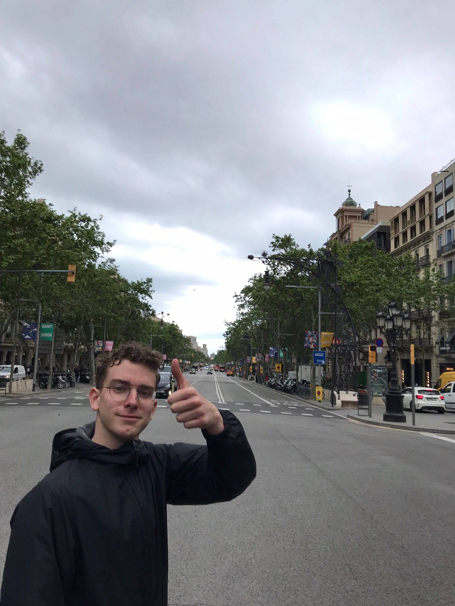

Welkom op deze pagina. Deze pagina gaat over het leven van Tuur in 't Zand.
Tuur is geboren en getogen in Beek. Dit is een dorpje in het zuiden van Limburg. Hier wont hij samen met zijn ouders en zijn ouderen broer. Tuur studeert momenteel CMD in Maastricht maar heeft voorheen Bouwkunde gestudeerd.
Een grote hobby van Tuur is scouting. Hij zit sinds zijn vijfde levensjaar bij de plaatselijke scouting in Beek. Hier heeft hij veel goede herrineringen aan. Op onderstaande afbeelding zien we een foto van Tuur.
Tuur is leider van de Welpen. Dit is een scoutinggroep met kinderen van 7 t/m 11 jaar. In de zomervakantie gaan de welpen 1 week op zomerkamp, aan dit kamp is altijd een thema gebonden. Afgelopen jaar was dit thema: Alladin. Dit filmpje is hieronder te aanschouwen.